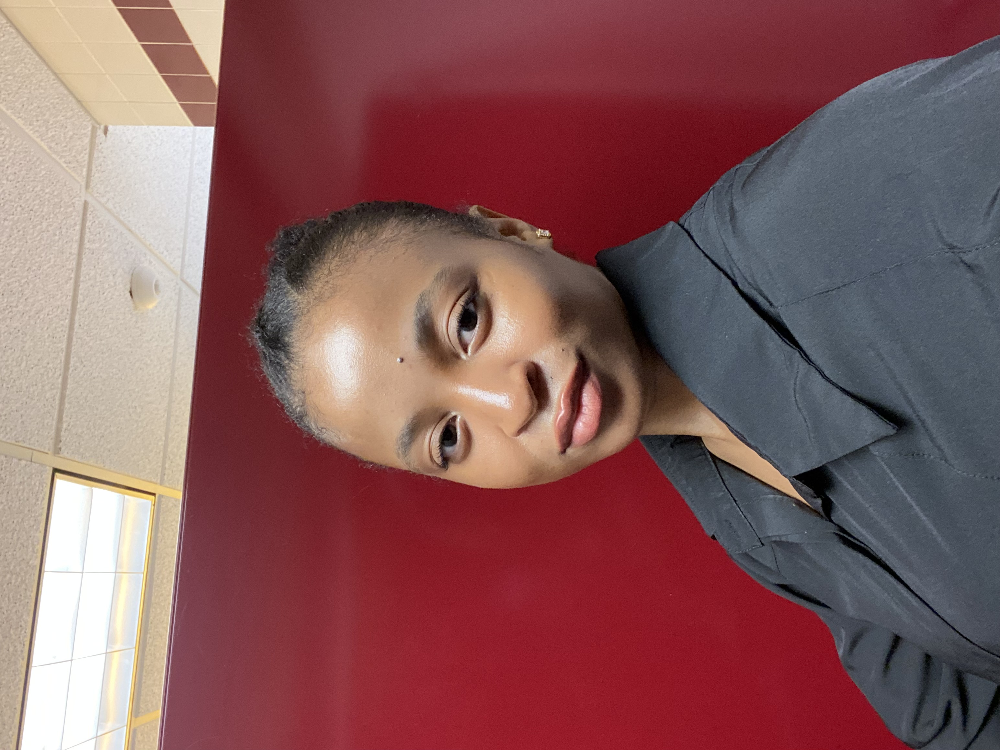

<div class="container">
    <div class="row">
        <!--About me-->
        <div class="col-lg shadow border m-1">
            <div class="text-center">
                <h2>About Me</h2>
                
                <p>Jennifer Romain, a current student doing a B.A in Arts Leaderships with a double minor in Business and Media & strategic Communications while being a Year Up trainee in Software Engineer. With a mix of business acument and effective communications, I am looking forward to a break-through in software engineering career path. Due to the ever evolving world of this field, I would love to go back to college whether part-time or full-time to have a more in dept knowledge.
                </p>
            </div>
        </div>
        <!--Feature project-->
        <div class="col-lg shadow border m-1">
            <div class="text-center">
                <h2>Featured project</h2>
            </div>
        </div>
    </div>
 </div>
 